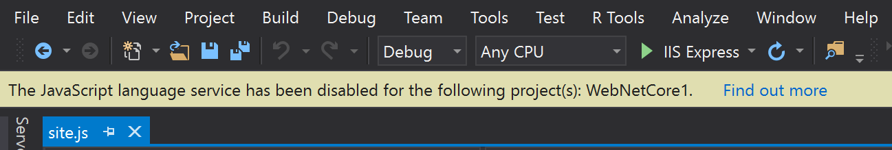
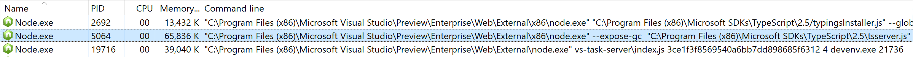
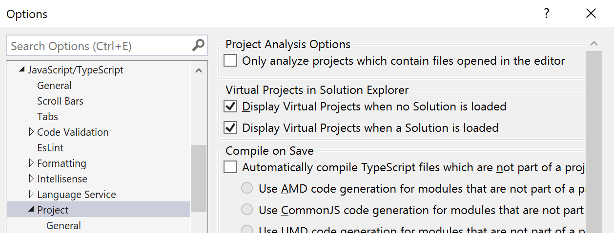

Troubleshooting
Note
This page attempts to explain that the "why" as well as the "how", as investigations are often more fruitful when the underlying mechanics and the reason for changes are understood. Many of the details below may be skipped over if not useful or interesting.
No IntelliSense, formatting, refactoring, etc.
If the language service for JavaScript & TypeScript doesn't appear to be working at all, basic installation, configuration, and operation should be verified first.
Installation
- Under the VS installation folder, ensure the language service files are present. For a default
installation of the Enterprise Edition, this would be under
a path similar to
"C:\Program Files (x86)\Microsoft Visual Studio\2017\Enterprise\Common7\IDE\CommonExtensions\Microsoft\TypeScript"Some files to specificially look for are:Microsoft.CodeAnalysis.TypeScript.EditorFeatures.dllandMicrosoft.VisualStudio.LanguageServices.TypeScript.dll, - Ensure the TypeScript SDK is also present. For a default installation, this would be under a path
similar to
"C:\Program Files (x86)\Microsoft SDKs\TypeScript\2.5"(Or the"2.3"folder, if on an earlier release than Visual Studio 2017 Update 5). Some files to look for here are:build\TypeScript.Tasks.dllandtsserver.js - In Visual Studio itself, open the
Help / Aboutmenu, and ensure that"TypeScript Tools"is listed.
If an installation failure is still suspected, the setup log files may prove useful. These are located
under the %TEMP% folder, with names starting with "dd_setup_". Locate the files with "TypeScript"
in the name, and ensure the log contains a line near the end with text such as "Installation completed successfully"
or "Package executed successfully. Return code: 0".
If the above and below investigations don't help, try repairing Visual Studio. This is done by launching the "Visual Studio installer" application, selecting the "More" drop-down, and choosing "Repair".
Configuration
On the Visual Studio menu, open
"Tools / Extensions and Updates", and navigate to the"Installed"node. Search for"TypeScript"and ensure the TypeScript Tools are listed, and are not disabled. Do the same for the"Visual Studio extension for TextMate grammars"(which is used to provide syntax highlighting).Note
Currently there is also a bug whereby if the
"Azure Functions and Web Jobs Tools"extension is disabled, then this can break the JavaScript & TypeScript language service. Please check this also.Check the activity log at
"%APPDATA%\Microsoft\VisualStudio\15.0_<ID>\ActivityLog.xml". (Open this in Internet Explorer for easiest viewing). Look for any errors that mention"TypeScript"or"CodeAnalysis".- On occassion, the MEF cache can become corrupt. Delete the MEF cache files in
"%LOCALAPPDATA%\Microsoft\VisualStudio\15.0_<ID>\ComponentModelCache", and then from a Developer Command Prompt run"devenv.exe /updateConfiguration"to recreate it. - If after clearing & recreating the MEF cache as shown above, there are still issues, check the MEF cache error
log at
"%LOCALAPPDATA%\Microsoft\VisualStudio\15.0_9c557bbb\ComponentModelCache\Microsoft.VisualStudio.Default.err". The file can contain lots of noise (i.e. benign errors), but can also point to problematic failures. - Check that another editor isn't configured to handle JavaScript and TypeScript files, by looking to see if
there are any custom mappings in
Tools / Options / Text Editor / File Extensions. - Even for a clean install of Visual Studio, some settings may have roamed from other installations, and
may be the cause of issue. Visual Studio uses a private registry hive, so examining this is a little involved.
- Run
regedt32.exeand select theHKEY_LOCAL_MACHINEkey. - Select
File / Load Hive...from the menu and open the file at%LOCALAPPDATA%\Microsoft\VisualStudio\15.0_<ID>\privateregistry.bin(where<ID>is unique per install). Give the new key a name such asVSprivate. The settings may now be browsed and edited (with great caution). - To save the data (e.g. for sharing for analysis), select the new
VSprivatekey and chooseFile / Exportfrom the menu. Give the file a name such as"VSprivate.reg". - When finished, with the
VSprivatekey selected, chooseFile / Unload Hivefrom the menu, and close the Registry Editor.
- Run
Operation
- With a JavaScript or TypeScript file open, check Task Manager to see if the Node.js process is running.
To do this, use
"Ctrl+Shift+Esc"to open Task Manager, click"More Details"on the bottom left (if present), go to the"Details"tab, right click on the column headings and select the"Command Line"column, and locate thenode.exeprocess which is running the"tsserver.js"script. If this is not present, the language service is not starting, (or failing), for some reason. - You can enable detailed logging by setting an environment variable. From a Developer Command Prompt, set the
"TSS_LOG"environment varaible using something like"SET TSS_LOG=-file C:\temp\logs\tsserver.log -level verbose"and restart Visual Studio. (Note: The folder given for the log file location should already exist on disk). After attempting to edit a JavaScript of TypeScript file, see if this file is present. If it is, look for any errors or exceptions that are happening internally.
Language service is disabled
When opening certain projects or solutions, you may get a bar along the top of the editor with text that reads "The JavaScript language service has been disabled for the following project(s)", as shown below.

This limit is enabled by default to reduce the amount of memory that the JavaScript language service in Visual Studio 2017 might consume, as loading high volumes of JavaScript code is often unintentional, or suboptimal. See the section below on "Reducing the amount of source loaded" for ways to configure this.
Warning
The project name given in the alert is the project that happened to be being processed when the limit was hit. While this is most often the project that is causing problems, it is not guaranteed to be so.
Excessive CPU and/or memory usage
High CPU usage or memory usage by the Node.exe process that runs the JavaScript and TypeScript
language service is often caused by the amount of code loaded that needs to be analyzed. As a
first step, verify it is indeed the JavaScript/TypeScript language service process consuming the
resources. This is best done using Task Manager (most easily launched with Ctrl + Shift + Esc),
selecting "More details" in the bottom left if necessary, going to the "Details" tab, and adding
the "Command line" column (right click on the column headings and click on "Select columns"). The
language service process is the Node.exe process running the tsserver.js script, as shown below:

If it is indeed the offending process, often the best way to reduce load is to reduce the amount of source code analyzed, as shown below.
Reducing the amount of source loaded
By default, without a tsconfig.json file present, a Visual Studio 2017 project will create
a TypeScript "context" that includes all the TypeScript files, and another for any JavaScript files. These
contexts may be controlled somewhat with TypeScript settings in the Visual Studio project file, however
for more control over the "contexts" and their settings, adding tsconfig.json files is recommended.
If one or more tsconfig.json files are present in a project, then a "context" will be created for
each tsconfig.json file, and any files not belonging to one of these contexts, will be placed into
a "Miscellaneous" context with default settings.
The language service works by statically analyzing the source code, and attempting to infer the shape and types of the code; this is what powers the editor completion lists, signature help, goto definition, etc. For TypeScript code, or JavaScript code with JsDoc annotations, this can be highly effective, however for many JavaScript files - especially large libraries - this results in a lot of work, with often limited results.
For some common JavaScript libraries, the langauge service can recognize the library files, and will automatically fetch the type definitions for it rather than process the JavaScript code directly. For some project structures however, this is insufficient, and assisting the language service via explicit configuration can be highly beneficial.
The simpliest way to avoid loading large Javascript libraries, but still provide good IntelliSense, is to have all such code under common directories which can be excluded from the context, and then listing the libraries to fetch and include the type definitions for explicitly. For example, in the below configuration, the large JavaScript libraries are included under the "js/lib" and "vendor" directories, so these have been listed under the "exclude" setting. The "typeAcquisition" configuration is then provided to fetch and include the definitions for the excluded libraries. (The other settings in this configuration file will be explained further below).
tsconfig.json
{
"compilerOptions": {
"allowJs": true,
"noEmit": true,
"disableSizeLimit": true,
"skipLibCheck": true
},
"typeAcquisition": {
"enable": true,
"include": ["knockout", "underscore", "chartist"]
},
"exclude": [
"node_modules",
"js/lib",
"vendor"
]
}
Other optimizations to reduce overhead
Project settings
The above tsconfig.json file contains several other options that may be beneficial, these are:
- "disableSizeLimit": This will switch off the limit on the amount of JavaScript code loaded, which can cause the warning shown at the top of this page. Note however in doing so, there is a risk of "out of memory" errors in the language service if more code is loaded than can be processed.
- "skipLibCheck": By default the language service will check the type definition files, ("*.d.ts" files).
For a JavaScript only project, or projects using well-tested type definition files (such as
those published via
@typesand fetched automatically), this can be of little value, so disabling this via this configuration option can be beneficial. - "noEmit": If the language service is not being used to "compile" the code (i.e. convert TypeScript into JavaScript, or convert ES2015 JavaScript into ES5 JavaScript), then this option should be set.
Editor settings
Within Visual Studio 2017, the default behavior is to create the language service contexts for every project in a solution. In VS2017 Update 3 an option was added to only create the contexts for projects that have files open in the editor. This can significantly reduce memory usage, but does mean that projects without files open may contain errors that will not show in the editor while editing. (Though the errors will still be shown when performing a build).
To enable this option, select "Tools" / "Options" from the menu, navigate to "Text Editor" / "JavaScript/TypeScript" / "Project", and check the setting "Only analyze projects which contain files opened in the editor".

Viewing the files in the project contexts
Often it is useful to understand the source files that are contributing to the contexts created within the language service. By checking the "Display Virtual Projects when a Solution is loaded" option in the "Tools" / "Options" dialog as shown above, Solution Explorer in Visual Studio will add a "TypeScript Virtual Projects" node under the solution as shown below, which contains a child node for each context created, that shows all the files contained within it.
Analyzing the contexts created may highlight an area where more source is being included than expected, and this may then be corrected via configuration options as outlined above.

Enable detailed language service logging
The "brains" of the language service largely runs in a node.exe process running the tsserver.js script.
Visual Studio 2017 communicates with this process to keep the project in sync, and ask questions for the
editor. This communication can be logged, which can be very helpful in identifying where issues might be
occurring.
Logging is easiest enabled by setting an environment variable. This can be set via system properties, or on the command line before launching Visual Studio. Below describes how to do it via the command-line.
- Open an instance of the
"Developer Command Prompt for VS 2017". - Set the environment variable with a command such as:
SET TSS_LOG=-level verbose -file C:\temp\logs\tsserver.log - Launch VS 2017 from the same command prompt by running
devenv.exe.
Note
The folder to contain the log file referenced in step 2 should already exist
After reproducing the problem, log files should be created in the folder specified. (There will be a tsserver.log file
created for the langauge service process, and a ti-<ProcId>.log file created for any types installer processes).
Warning
The log file may contain sensitive information, such as file paths, segments of code, and data used for completion lists, signature help, etc. Review the file before sharing if this is a concern.
Of particular interest in the log file, depending on the problem, may be the project structures that get created and the files & settings they contain, and the execution time for each request to be processed.
Gathering an ETW trace of detailed analysis
For in-depth analysis, it can be useful to gather an ETW log with detailed tracing. (For more information on ETW, see this MSDN documentation.
One of the most powerful tools to capture (and view) ETW events is PerfView. PerfView is an open source tool and the latest release can be downloaded from https://github.com/Microsoft/perfview/releases .
With PerfView downloaded and the executable extracted and unblocked, open a "Developer Command Prompt for VS 2017"
with Administrative rights, and run the following commands:
SET VSEXE=%VSINSTALLDIR%Common7\IDE\devenv.exeSET ETWPROV=*TypeScriptEventSource,*Microsoft-VisualStudio-CommonPerfView -KernelEvents:FileIOInit,ThreadTime -Providers:%ETWPROV% -CircularMB:4096 -BufferSizeMB:256 run "%VSEXE%"
Visual Studio should launch. Reproduce the issue, then stop the PerfView trace by closing Visual Studio and allowing the trace to finish packaging. Do not hit Cancel in PerfView, as this will make the trace unusable. The zip file created contains detailed logging of file access, asynchronous tasks, Visual Studio internal events, and events from the TypeScript/JavaScript language service.
Caution
The log file created can be extremely large - in the order of hundreds of megabytes per minute - and contains system-wide details including call-stacks, file access, etc. Ensure you have sufficient disk space, stop logging promptly after reproducing the problem, and do not share the trace if it may contain private data.
Useful links
The below pages go over the configuration options in more detail: